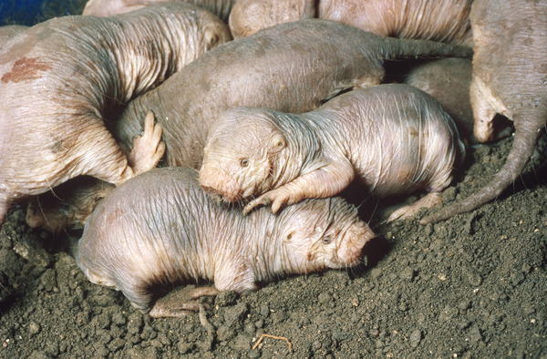

Page Title

Naked Mole Rat Fun Facts
- Naked mole rats have a special place in pop culture, especially in the hit TV series Kim Possible where one of the main characters had a pet named Rufus.
- Naked mole rats have over 17 different vocal sounds which they use to communicate with each other.
- Naked mole rats have no neurotransmitters which means they are resistant to pain. Talk about a cool superpower!